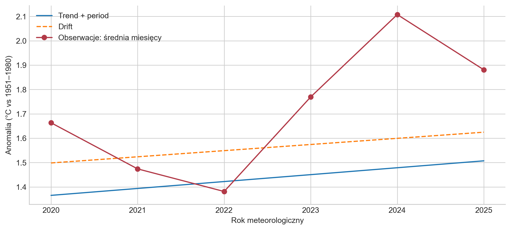

Kontrolowany eksperyment FAOSTAT: trzy częstotliwości i proste benchmarki
Opublikowano
23 września 2026
Dane miesięczne zawierają znacznie więcej obserwacji niż dane roczne. Intuicyjnie można więc oczekiwać, żee model wykorzystujący miesiące lub sezony będzie lepiej przewidywał przyszłą średnią roczną.
W tym notebooku sprawdzam tę hipotezę. Porównuję trzy sposoby przedstawienia tej samej historii temperatury:
roczny — jedna obserwacja na rok,
sezonowy — cztery obserwacje na rok,
miesięczny — dwanaście obserwacji na rok.
We wszystkich przypadkach prognozujemy dokładnie tę samą wielkość: średnią anomalię temperatury dla roku meteorologicznego, liczoną z dwunastu miesięcy od grudnia poprzedniego roku do listopada.
Dzięki temu porównanie odpowiada na jedno konkretne pytanie:
Czy zachowanie informacji o miesiącach lub sezonach pomaga przewidywać średnią roczną?
Ważne: prognozowana wartość jest tutaj konstruowana bezpośrednio z danych miesięcznych i nie jest opublikowanym przez FAOSTAT agregatem Meteorological year. Różnicę między tymi wielkościami sprawdzam wcześniej w audycie agregacji. W tym eksperymencie porównujemy częstotliwość przy jednej regule agregacji.
Kod
from pathlib import Pathimport syssys.path.insert(0,str(Path.cwd().parent))from frequency_backtest import analyzefrom frequency_stability import verify_freezeimport matplotlib.pyplot as pltfrom IPython.display import display,Markdownverify_freeze()r=analyze()plt.style.use('seaborn-v0_8-whitegrid')plt.rcParams.update({'figure.dpi':130,'axes.spines.top':False,'axes.spines.right':False})labels={'annual':'Roczna','seasonal':'Sezonowa','monthly':'Miesięczna'}def table(df):display(df.style.format(precision=3).hide(axis='index'))best=r['metadata']['selection']selected=r['scores'].loc[(r['scores'].frequency==best['frequency'])&(r['scores'].model==best['model'])].iloc[0]
WskazówkaSzczegóły techniczne
Obliczenia wykonuje funkcja analyze() ze skryptu frequency_backtest.py. Przed jej uruchomieniem verify_freeze() z frequency_stability.py sprawdza zgodność plików z zamrożonym zapisem eksperymentu. Bloki kodu poniżej przygotowują prezentację otrzymanych wyników; pełną listę lokalnych zależności opisuje sekcja Kod i odtworzenie analizy.
Jak porównuję prognozy?
Samo dopasowanie modelu do danych historycznych nie mówi jeszcze, czy będzie on dobrze przewidywał przyszłość. Dlatego symuluję serię prognoz wykonywanych w przeszłości.
Pierwsza prognoza wykorzystuje historię kończącą się w listopadzie 1990 roku, kolejna - w listopadzie 1991 roku itd., aż do 2013 roku. Dla każdego takiego punktu startowego prognozuję od jednego do sześciu pełnych lat meteorologicznych naprzód.
W rezultacie każda metoda jest oceniana na 24 punktach startowych i 6 horyzontach prognozy, co daje 144 błędy.
Jest to walidacja typu rolling-origin: wraz z kolejnymi próbami historia dostępna dla modelu stopniowo się wydłuża.
Nie jest to jednak pełna symulacja prognoz wykonywanych w czasie rzeczywistym. Okresy testowe częściowo się nakładają, a historyczne dane FAOSTAT mogły zostać później zrewidowane. Wyniki należy więc traktować jako kontrolowany eksperyment retrospektywny.
Od bardzo prostego założenia do trendu
Porównuję cztery proste metody. Ich zadaniem nie jest znalezienie najbardziej zaawansowanego modelu, lecz stworzenie punktów odniesienia dla późniejszych eksperymentów.
Metoda
Intuicja
Naive
przyszłość będzie podobna do ostatniej obserwacji
Drift
dotychczasowe średnie tempo zmian będzie kontynuowane
Seasonal naive
powtórzy się ostatni pełny rok
Trend + period
długookresowy trend będzie kontynuowany, z uwzględnieniem stałych różnic między częściami roku
To rozróżnienie jest ważne, ponieważ więcej obserwacji nie musi oznaczać więcej informacji użytecznej dla prognozy rocznej.
Przykładowo seasonal naive na danych miesięcznych powtarza ostatnie dwanaście miesięcy. Po ich uśrednieniu otrzymujemy dokładnie tę samą wartość, co przy powtórzeniu ostatniej średniej rocznej.
Podobna własność występuje w zastosowanym tutaj modelu trendu: po agregacji prognozy roczne z danych rocznych, sezonowych i miesięcznych są identyczne.
Więcej obserwacji nie poprawiło prognozy
Jak oceniam jakość prognoz?
Każdą prognozę porównuję z wartością, która została później rzeczywiście zaobserwowana. Różnica między nimi jest błędem prognozy. Do oceny modeli wykorzystuję trzy miary:
MAE (Mean Absolute Error, średni błąd bezwzględny) — pokazuje, o ile przeciętnie prognoza różni się od obserwacji, niezależnie od kierunku błędu. MAE = 0,20°C oznacza więc, że prognozy odbiegały od rzeczywistych wartości średnio o 0,20°C. Im mniejsze MAE, tym dokładniejsze prognozy.
RMSE (Root Mean Squared Error, pierwiastek ze średniego błędu kwadratowego) — również mierzy wielkość błędów, ale silniej reaguje na duże pomyłki. Im mniejsze RMSE, tym lepiej; wyraźnie większe RMSE od MAE może wskazywać na występowanie pojedynczych większych błędów.
Bias (średni błąd ze znakiem) — pokazuje, czy model ma tendencję do systematycznego zawyżania lub zaniżania prognoz. Wartość bliska zeru jest pożądana; bias ujemny oznacza przeciętne niedoszacowanie, a dodatni — przeszacowanie.
MAE i RMSE służą więc przede wszystkim do oceny wielkości błędów, natomiast bias pomaga ocenić ich kierunek.
(a) MAE rocznych prognoz, 24 początki 1990–2013. Wspólny cel, °C. Zbieżne linie oznaczają równe prognozy, a nie brak serii.
Częstotliwość
Metoda
Liczba błędów
MAE
RMSE
bias
annual
Naive
144
0.224
0.281
-0.130
annual
Drift
144
0.206
0.261
-0.063
annual
Seasonal naive
144
0.224
0.281
-0.130
annual
Trend + period
144
0.187
0.225
-0.138
seasonal
Naive
144
0.274
0.370
-0.180
seasonal
Drift
144
0.266
0.364
-0.126
seasonal
Seasonal naive
144
0.224
0.281
-0.130
seasonal
Trend + period
144
0.187
0.225
-0.138
monthly
Naive
144
0.369
0.473
-0.124
monthly
Drift
144
0.388
0.488
-0.049
monthly
Seasonal naive
144
0.224
0.281
-0.130
monthly
Trend + period
144
0.187
0.225
-0.138
(b)
Rysunek 1
Wyniki historycznej walidacji nie potwierdzają prostej intuicji, że gęstszy szereg powinien prowadzić do dokładniejszej prognozy rocznej.
Najniższy błąd uzyskał model trendu liniowego — MAE 0,187°C. Co ważniejsze, jego wynik jest identyczny niezależnie od tego, czy model pracuje na danych rocznych, sezonowych czy miesięcznych. Oznacza to, że w tej metodzie dodatkowa szczegółowość miesięczna nie dostarczyła dodatkowej informacji wykorzystywanej przy prognozowaniu średniej rocznej.
W przypadku seasonal naive występuje ten sam efekt: po agregacji trzy częstotliwości prowadzą do tej samej prognozy i MAE 0,224°C.
Inaczej zachowują się naive i drift. Tutaj częstotliwość rzeczywiście zmienia wynik - ale nie na korzyść bardziej szczegółowych danych.
Dla naive MAE rośnie z:
0,224°C dla danych rocznych → 0,274°C dla sezonowych → 0,369°C dla miesięcznych.
W przypadku drift najlepszy jest również wariant roczny:
0,206°C dla danych rocznych, wobec 0,266°C dla sezonowych i 0,388°C dla miesięcznych.
Nie oznacza to jednak, że dane miesięczne są z natury gorsze. Problem wynika częściowo z konstrukcji tych prostych metod. Miesięczny naive przedłuża ostatni miesiąc - listopad - podczas gdy model roczny przedłuża średnią całego roku.
Co z tego wynika?
Sama liczba obserwacji nie poprawia prognozy.
Większa liczba obserwacji pomaga tylko wtedy, gdy model wykorzystuje dodatkowe informacje zawarte w danych miesięcznych. W przypadku części badanych metod szczegóły miesięczne znikają po obliczeniu prognozy rocznej, dlatego wynik jest taki sam jak dla danych rocznych.
Czy historycznie najlepsza metoda sprawdziła się po 2019 roku?
Walidacja historyczna wskazała trend liniowy jako najlepszą z badanych metod. Następnie zamrażam ten wybór i sprawdzam go na późniejszym okresie 2020–2025.
To ważne rozróżnienie: nie wybieram ponownie modelu po zobaczeniu nowych danych.
Kod
f=r['final_scores'].loc[(r['final_scores'].frequency==best['frequency'])&(r['final_scores'].model==best['model'])].iloc[0]d=r['final_scores'].query("frequency == 'annual' and model == 'Drift'").iloc[0]display(Markdown(f'Wybrany trend ma w późniejszym okresie **MAE {f.MAE:.3f}°C**, podczas gdy roczny drift ma **{d.MAE:.3f}°C**. Ranking zmienił się. To ograniczenie wniosku z jednego zakresu historycznego, a nie powód do ponownego wyboru na sześciu latach testowych.'))table(r['final_scores'].rename(columns={'frequency':'Częstotliwość','model':'Metoda','n':'Lata'}))
Wybrany trend ma w późniejszym okresie MAE 0.290°C, podczas gdy roczny drift ma 0.224°C. Ranking zmienił się. To ograniczenie wniosku z jednego zakresu historycznego, a nie powód do ponownego wyboru na sześciu latach testowych.
Częstotliwość
Metoda
Lata
MAE
RMSE
bias
annual
Naive
6
0.270
0.342
-0.240
annual
Drift
6
0.224
0.264
-0.151
annual
Seasonal naive
6
0.270
0.342
-0.240
annual
Trend + period
6
0.290
0.350
-0.277
seasonal
Naive
6
0.285
0.358
-0.262
seasonal
Drift
6
0.236
0.286
-0.186
seasonal
Seasonal naive
6
0.270
0.342
-0.240
seasonal
Trend + period
6
0.290
0.350
-0.277
monthly
Naive
6
0.324
0.403
-0.321
monthly
Drift
6
0.263
0.319
-0.236
monthly
Seasonal naive
6
0.270
0.342
-0.240
monthly
Trend + period
6
0.290
0.350
-0.277
Kod
fig,ax=plt.subplots(figsize=(9,4),layout='constrained')for model,style in [('Trend + period','-'),('Drift','--')]: g=r['final'].query("frequency == 'annual' and model == @model") ax.plot(g.year,g.forecast,style,label=model)ax.plot(g.year,g.actual,'o-',color='#b23a48',label='Obserwacje: średnia miesięcy')ax.set(xlabel='Rok meteorologiczny',ylabel='Anomalia (°C vs 1951–1980)')ax.legend()plt.show()

Rysunek 2: Wspólny cel roczny z nowych miesięcznych danych FAOSTAT oraz dwie prognozy z historii kończącej się w listopadzie 2019.
W latach 2020–2025 trend osiągnął MAE 0,290°C. Roczny drift, który wcześniej był słabszy, osiągnął natomiast 0,224°C.
Kolejność metod się więc odwróciła.
Na wykresie widać również, że prognozy systematycznie znajdują się poniżej obserwowanych wartości. Ujemny bias występuje we wszystkich badanych konfiguracjach, czyli modele przeciętnie niedoszacowują temperatur w latach 2020–2025.
Nie oznacza to, że sześć nowych lat wystarcza do uznania driftu za lepszy model. Pokazuje coś ważniejszego:
Przewaga modelu obserwowana w jednym okresie historycznym nie musi utrzymywać się w kolejnym okresie.
To jeden z powodów, dla których wynik pojedynczego backtestu nie powinien być traktowany jako trwały ranking modeli.
WskazówkaKod i odtworzenie analizy
Notebook jest warstwą opisu i prezentacji. Obliczenia korzystają z czterech lokalnych plików:
Moduł używany przez frequency_backtest.py: tworzy wspólny cel i reprezentacje częstotliwości, definiuje benchmarki, wykonuje rolling-origin i oblicza metryki.
Wczytuje i waliduje lokalne wydania danych World oraz buduje indeks miesięczny; korzystają z niego moduły obliczeniowe.
r = analyze() przelicza wyniki podczas wykonania notebooka. Kolejne bloki wykorzystują r['scores'] i r['by_horizon'] do oceny historycznej oraz r['final'] i r['final_scores'] do oceny lat 2020–2025. Nie odczytują tych wyników z gotowych tabel CSV.
Samodzielne uruchomienie python stories/globalne_ocieplenie/frequency_backtest.py dodatkowo zapisuje tabele i metadane w results/frequency_backtest/. Zmiany kodu lub danych objętych zamrożeniem wymagają osobnej wersji eksperymentu; nie należy nadpisywać utrwalonej oceny. Zamrożenie nastąpiło po obejrzeniu wyników 2020–2025 — szczegóły i ograniczenia opisuje protokół oceny.